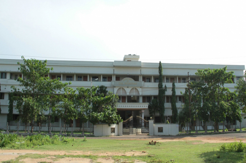

List of Government Engineering College in Andhra Pradesh.
| S.N | Name of the Engineering College | Location | Type | Course/Degree | Pick/Official website link |
| 1 | Jntua College of Engineering | Anantapur,Andhra Pradesh | Government | B.Tech/M.Tech | |
| 2 | Sri Krishnadevaraya University College of Engineering and Technology | Anantapur, Andhra Pradesh | Government | B.Tech | |
| 3 | Sri Venkateswara University College of Engineering | Chittoor, Andhra Pradesh | Government | B.Tech/M.Tech | |
| 4 | School of Engineering & Technology | Chittoor, Andhra Pradesh | Government | B.Tech |
|
| 5 | ANU College of Engineering And Technology | Guntur, Andhra Pradesh | Government | B.Tech/M.Tech |
|
| 6 | Rgukt-Nuzivid | Krishna, Andhra Pradesh | Government | B.Tech/M.Tech |
|
| 7 | Central Institute of Petrochemicals Engineering and Technology, Vijayawada | Krishna, Andhra Pradesh | Government | B.Tech/M.Tech | |
| 8 | Rayalaseema University College of Engineering | Kurnool, Andhra Pradesh | Government | B.Tech | |
| 9 | College of Engineering, Dr B R Ambedkar University Srikakulam | Srikakulam, Andhra Pradesh | Government | B.Tech | |
| 10 | Andhra University College of Engineering | Vishakhapatnam, Andhra Pradesh | Government | B.Tech/M.Tech | |
| 11 | Andhra University College of Engineering for Women | Vishakhapatnam, Andhra Pradesh | Government | B.Tech |
|
| 12 | Jntuk University College of Engineering, Vizianagaram | Vizianagaram, Andhra Pradesh | Government | B.Tech | |
| 13 | Jntua College of Engineering Pulivendula | Ysr District, Andhra Pradesh | Government | B.Tech/M.Tech | |
| 14 | Y.S.R. Engineering College of Y.V.U. | Ysr District, Andhra Pradesh | B.Tech | Government | |
| 15 | Rgukt- RK Valley | Ysr District, Andhra Pradesh | Government | B.Tech/M.Tech | |
| 16 | Institute of Science and Technology, Jntuk, Kakinada | East Godavari, Andhra Pradesh | Government | M.Tech |  |
| 17 | University College of Engineering,Kakinada | East Godavari, Andhra Pradesh | Government | B.Tech/M.Tech |
|
| 18 | Spatial Information Technology, Ist, Jntuk | East Godavari, Andhra Pradesh | Government | M.Tech |
|
| 19 | School of Food Technology | East Godavari, Andhra Pradesh | Government | M.Tech |
|
| 20 | School of Biotechnology | East Godavari, Andhra Pradesh | Government | M.Tech |
|
| 21 | Adikavi Nannaya University | East Godavari, Andhra Pradesh | Government | B.Tech/ MCA / MBA | |
| 22 | Jntua College of Engineering | kalikiri, Andhra Pradesh | Government | B.Tech |